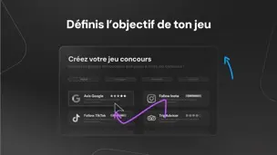
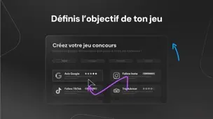
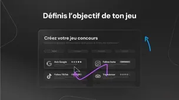

La solution indispensable pour gérer efficacement votre établissement.
Rôle
Motion designer -- Direction artistique, campagne de communication,
animation d’interface, interactivité
Logiciels utilisés
After Effects Illustrator Figma Premiere Pro
Chronologie & Statut
8 semaines de réalisation, Lancé en novembre 2024
Aperçu
Développez votre visibilité, attirez de nouveaux client, gérez votre réputation en ligne
et
simplifiez votre marketing digital.
Up Review est une plateforme SaaS destinée aux commerces de proximité proposant une
palette
d'outils permettant d'améliorer l'indicateur marketing de son établissement. La
plateforme
subit en 2024 une refonte complète, afin de proposer davantage de fonctionnalités, et de
couvrir le plus de besoins pour un marché plus étendu.
J'ai été chargé en collaboration avec l'équipe derrière la construction de la plateforme
de
réaliser un ensemble de vidéos promotionnelles afin de présenter et mettre en avant
dynamiquement Up Review.
Booster ses avis et sa réputation en ligne avec Up Review.
Dans un environnement où la conccurence entre commerces de proximité est de mise,
l'un
des
indicateurs importants qui permettent à ces établissements d'exister sont leur
e-réputation.
Up Review vise explicitement le marché de la restauration, des bars, des hôtels ou des
réseaux de franchises en leur proposant une solution sur-mesure dans l'objectif
d'améliorer
leurs avis Google et leur présence sur les réseaux sociaux.
Dans le cadre de la refonte de la plateforme vers sa V2, proposant davantage de
fonctionnalités accompagné d'un redesign plus poussé, j'ai été chargé de
promouvoir Up
Review en mettant en avant son outil principal. L'objectif du projet est de
réaliser un teaser pour les réseaux sociaux ainsi qu'une vidéo introductive et vendeuse
du
produit.
Retranscrire l'expérience Up Review.
En collaboration avec les équipes UX/UI et graphisme, qui ont repensé l'expérience
utilisateur d'Up Review, j'ai d'abord contribué dans la direction artistique du projet et à
la
façon dont nous allions présenter visuellement la plateforme :
- La communication d'Up Review vise un public large de professionnels, avec
et
sans
compétences informatique.
- L'objectif est de montrer un usage unique de la plateforme, en mettant en
avant le dynamisme et l'accessibilité.
- La présentation doit être visuellement proche de la webapp, avec certains
éléments et graphiques clefs de l'interface.
- La nouvelle direction visuelle ré-hausse en gamme Up Review et doit
refléter un service fiable et intuitif.
Valoriser une mécanique de jeu ficelée.
L'outil principal mis en avant par Up Review est le jeu concours, celui-ci
offre aux
commerçants la possibilité de proposer à leurs clients, en échange de la complétion d'un
objectif, des offres ou avantages définis sur-mesure.
La vidéo s'adresse à ces professionnels en mettant en avant les avantages que peux
leur
offrir le service.
L'idée n'est pas de montrer un aspect "escroquerie", souvent associé aux
jeux concours, mais bien un mécanisme intelligement réalisé, respectant les
valeurs
d'Up Review et les cadres légaux autour de ces pratiques.
Le client laisse un avis Google et gagne en contre-partie une chance d'obtenir des
produits
offerts.
Avec sa refonte, le jeu concours devient encore plus avancé, avec un ensemble complet de
paramètres :
- L'objectif marketing, le client gagne sa participation au jeu, en échange
d'un avis google ou de suivi sur les réseaux sociaux.
- Le multi-objectif, si le client essaye une nouvelle fois de jouer,
celui-ci
doit remplir un autre objectif.
- Jeu 100% personnalisable, le commerçant peut adapter le jeu et ses lots à
sa
guise avec une personnalisation poussée.
- Le choix de probabilités, le commerçant peut choisir le pourcentage de
chance
de gagner tel ou tel lot.
- Données personnelles, le commerçant peut demander de récupérer diverses
informations personnelles client, afin d'en constituer une base de donnée et de
l'utiliser
pour des campagnes marketing.
Faciliter la présentation d'un service complexe.
La principale difficultée vis à vis de l'introduction de la plateforme fut de la rendre
accessible en incluant un maximum d'informations, sans pour autant la rendre indigeste ou
lourde
pour le spectateur. Nous avons pour cela établit un plan de communication visant à limiter
la
friction narrative en divisant la communication du service en deux vidéos :
- Une première vidéo teaser format réseaux sociaux, réduite dans sa
narration
incitant le
spectateur à se rediriger vers le site d'Up Review.
- Une deuxième vidéo complète présentant les fonctionnalités d'Up Review,
incitant le
spectateur à adhérer au service.
Le teaser introduit Up Review en adoptant une approche futuriste et minimaliste. Le
site vient ensuite complémenter les informations essentielles. Puis, la vidéo
complète
présente sur la
landing page apporte finalement un avant goût
immersif du cœur de l'outil.
Ainsi avec une narration
"step-by-step", un spectateur X peu facilement s'approprier le service et en
finalité y
adhérer.
Une immersion dans l'expérience Up Review.
La conception de la vidéo complète présentant l'outil a débuté à partir d'un premier découpage
technique de la bande son sélectionnée. Cela nous a permis de planifier en amont du storyboard
la
répartition des messages et mises en scène à afficher. Ainsi, le plan de la vidéo s'est réparti
en
trois grandes étapes :
- L'animation commencera par un mot clef impactant, enchaînant sur la suite
du
slogan
puis du logo.
- Seront ensuite divisées selon les parties sonores 8 séquences clefs présentant une
navigation
progressive au sein des fonctionnalités de l'outil.
- La conclusion de la vidéo se fera sur un call to action mettant en avant Up Review, puis un
aperçu
final de son interface accompagnée du logo.
L'étape suivante de conception consistera à recréer et adapter certains éléments clefs de la
nouvelle interface d'Up Review afin de
faciliter,
par
la suite, son animation. L’objectif est d’individualiser chaque élément
afin de les rendre entièrement flexibles.
Planifier l'animation
L’objectif du storyboard est de réussir à mettre en scène selon le plan musical un ensemble
d'animations logiques, intuitives et percutantes. La narration est faite de sorte à
présenter
progressivement au spectateur l'outil sans le surcharger d'informations, le tout
synchronisé avec la musique.

Les dessous de l'animation
Quelques extraits de ce qu'il se passe avec chaque calque derrière le visuel :
Statistiques : 1334 calques - 4286 images clés
Sound design final
Ajouter une couche audio supplémentaire par dessus l'animation vise à rendre chaque interaction
visuelle plus immersive. Le spectateur
interprète avec plus de clarté ce qu'il se passe à l'écran, et plonge l'univers sonore de
la
vidéo
dans une ambiance plus vivante et dynamique.
Patrick Navarro / Co-fondateur Up Review
Basile a démontré un excellent niveau de compétence dans son domaine. Son
principal projet a consisté en la réalisation d'une vidéo de présentation pour notre
SaaS,
un
projet d'envergure qui nécessitait à la fois créativité, technicité et rigueur.
Basile a non
seulement mené à bien ce projet avec brio, mais il a également su apporter une réelle
plus-value
grâce à ses propositions innovantes et à son sens artistique développé.
En parallèle de ce projet majeur, Basile a également contribué à plusieurs mini-projets
pour
Up
Review. À chaque étape, il s'est montré particulièrement organisé, respectant les
délais
avec une grande efficacité, tout en maintenant
un haut niveau de qualité dans ses livrables.
Ce qui distingue particulièrement Basile est sa capacité à être force de proposition. Il
n'hésite pas à partager ses idées et à les défendre, tout en restant à l'écoute des
retours
et
des besoins exprimés par l'équipe. Sa motivation et son esprit d'initiative ont
été
grandement
appréciés au sein de notre structure.
Nous avons été convaincus par la qualité du travail de Basile et son
potentiel, au point de lui proposer un contrat d'apprentissage afin de poursuivre notre
collaboration sur le long terme.
Nous recommandons Basile sans hésitation pour tout projet de motion design.


 
